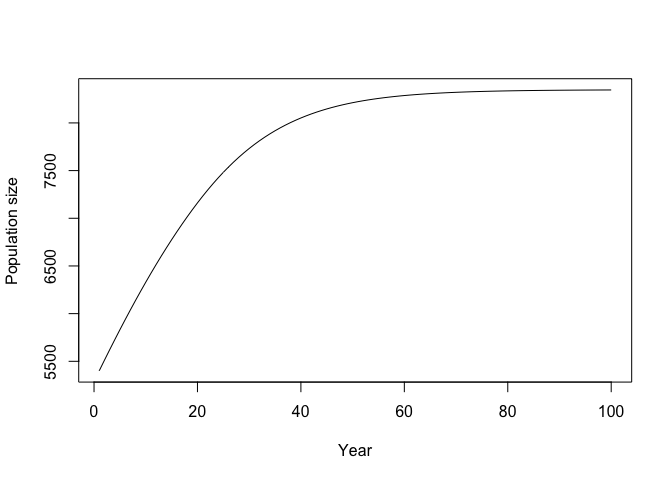

mmrefpoints is an R package that generates marine mammal population projections based on starting abundance, life history, and bycatch rates, based on the BALEEN II population dynamics model.
Need
Stakeholders involved in the management of marine mammal bycatch in marine fisheries need tools to simulate the effects of management decisions on marine mammal populations. Population models are a key part of this process. This package contains the tools to simulate marine mammal populations and an app that shows model outputs in a user-friendly way.
Details
This R package contains the functions used in the Marine Mammal Bycatch Impacts Exploration Tool (MMBIET), a Shiny app built by Margaret Siple, André Punt, and the Ocean Modeling Forum’s Marine Mammal Bycatch Working Group.
The functions in this package, and the Shiny app, are intended to be used in cases where data on bycatch and/or population status are sparse or unavailable.
Our target audience is stakeholders interested in projecting marine mammal populations to examine the impacts of bycatch. Those code could also be used as a teaching tool, or for anyone who is more familiar with R than FORTRAN and wants to use some components of the BALEEN II model (Punt 1999).
Installation
This package can be downloaded directly from GitHub:
devtools::install_github("mcsiple/mmrefpoints")
Contributing 
Community guidelines
We would like this package to be sustainable in the long term and welcome contributions. If you encounter a bug, please leave a note on the Issues page. You can also leave comments there about additional functionality (please add the “enhancement” label to your issue). If you are interested in contributing, we direct you to the R package contribution advice from Hadley Wickham.
Accessing the MMBIET Shiny app
The functions in this package can also be accessed through the Shiny app for this project, which is located online here. The app provides an easy way to explore outcomes and print out a report with inputs and outputs.
The mmBIET Shiny app can also be accessed through the R package:

Functionality
Key functions in this package:
| Function | Purpose |
|---|---|
| dynamics() | Generate a single trajectory for marine mammal population size |
| projections() | Generate several trajectories for marine mammal population size |
To create a single projection for a marine mammal population, use the dynamics() function:
x <- mmrefpoints::dynamics(S0 = 0.944, S1plus = 0.99, K1plus = 9000, AgeMat = 17,
InitDepl = 0.6, ConstantCatch = NA, ConstantF = rep(0.01, times = 100), z = 2.39, nyears = 100, nages = 25, lambdaMax = 1.04)
plot(1:100, x$TotalPop, type = 'l', xlab = "Year", ylab = "Population size")
References
Punt, A. E. 1999. Annex R: A full description of the standard Baleen II model and some variants thereof. Division of Marine Research, CSIRO Marine Laboratories, Hobart, Australia. Available from https://duwamish.lib.washington.edu/uwnetid/illiad.dll?Action=10&Form=75&Value=1651729 (accessed August 7, 2018).
How to cite
To cite this package or the MMBIET Shiny app, please use the following citation:
Margaret C. Siple, André E. Punt, Tessa B. Francis, Phil S. Hammond, Dennis Heinemann, Kristy J. Long, Jeff Moore, Maritza Sepulveda, Randall R. Reeves, Guðjón Már Sigurðsson, Gísli Víkingsson, Paul R. Wade, Rob Williams, and Alexandre N. Zerbini (t.b.d.). mmrefpoints: Projecting long-term marine mammal abundance with bycatch. R package version 1.0.0. url: https://github.com/mcsiple/mmrefpoints doi: 10.5281/zenodo.4758402